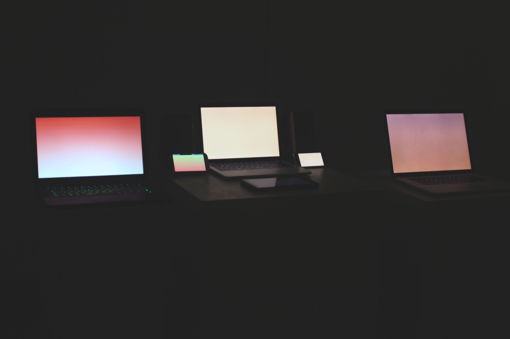

Motherboard - 2015
This collaboration with Craig Stam uses the language of ASMR triggering videos to create a breathing space online.
The web version is available over here: http://thnewlands.github.io/pages/~s.html I recommend viewing it in fullscreen.
You can find Craig's work over here: http://cargocollective.com/cstama/
